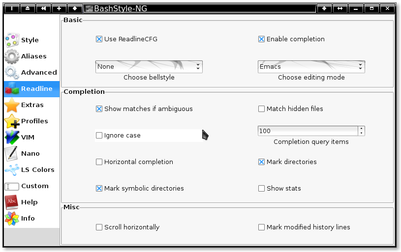

Chapter 4: Readline

Use ReadlineCFG:
When enabled, BS-NG is beeing used to setup Readline.
Enable Completion:
When enabled, Filename/Pathcompletion by pressing [TAB] is activated.
Change Bellstyle:
Change the Bellstyle of readline
| audible |
beep |
| visible |
|
| none |
---- |
Choose Editing Mode:
Wether to use Emacs or Vi like shortcuts
Bashs default setting is Emacs
Show matches if ambiguous:
When enabled, instead of ringing the bell, immediately all
posibilities for completion are shown.
Match hidden files:
When enabled, hidden files are included in the completion.
Ignore case:
When enabled, completion does ignore upper and lowercase.
Completion Query Items:
When pressing [TAB] for completion, this is the query limit.
If the amount of possible completions is higher or equal to
this value ask the user wether to display all completions.
Show stats:
When enabled, display stats when completing filenames.
| @ |
= link |
| / |
= folder |
| * |
= executable |
Horizontal completion:
When enabled, completion arranges possibilities horizontally
rather than vertically.
Mark directories:
When enabled, completion marks directories with a /, that saves one time pressing [TAB].
Mark symbolic directories:
When enabled, the same as `Mark Directories', but for symlinks.
Scroll horizontally:
When enabled, scroll the line horizontally, rather then entering a new line,
when the command is too long to be displayed in one line.
Mark modified history lines:
When enabled, rotating trough previously run commands, mark modified
history lines by prepending an asterisk (*).